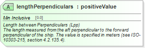

| Definition Type: | Attribute |
| Name: | lengthPerpendiculars |
| Type: | positiveValue |
| Containing Schema: | hcm-sdt.xsd |
| Use | Required |
| Documentation: | Length between Perpendiculars (Lpp) The length measured from the aft perpendicular to the forward perpendicular of the ship. The value is specified in meters (see ISO-10303-215, section 4.2.135.4). |
|  |
|
|
|